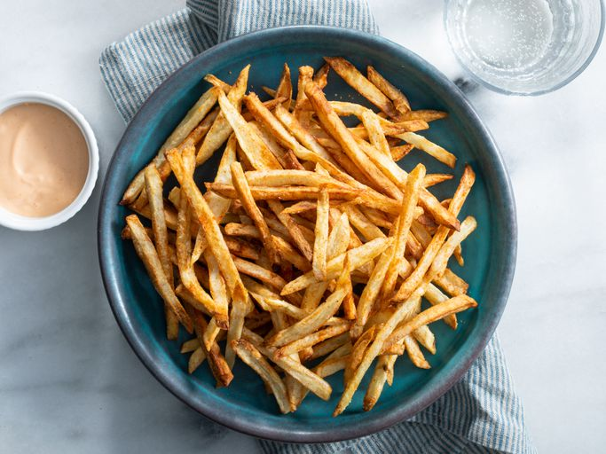

Lasagna

Description
Use your trusty air fryer to make these irresistible French fries.
Ingredients
- 1 pound russet potatoes, peeled
- 2 tablespoon vegetable oil
- 1 pinch cayenne pepper
- 1/2 tablespoon kosher salt
Steps
- Gather all ingredients.
- Cut each potato lengthwise into 3/8-inch-thick slices, then slice sections into 3/8-inch-wide sticks. Place potatoes in a bowl of cold water. Let soak to release excess starches, about 5 minutes; drain.
- Pour boiling water over the potatoes until they're covered by a few inches. Let sit for 10 minutes. Drain potatoes and transfer onto some paper towels. Blot off excess water and let cool completely, at least 10 minutes.r
- Place cooled potatoes in a mixing bowl. Drizzle with oil and season with cayenne; toss to coat.
- Preheat an air fryer to 375 degrees F (190 degrees C).
- Stack potatoes in a double layer in the fryer basket.
- Cook for 15 minutes. Slide basket out and toss fries. Continue frying until golden brown, about 10 minutes more. Toss fries with salt in a mixing bowl. Serve immediately.